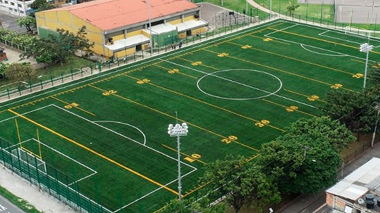
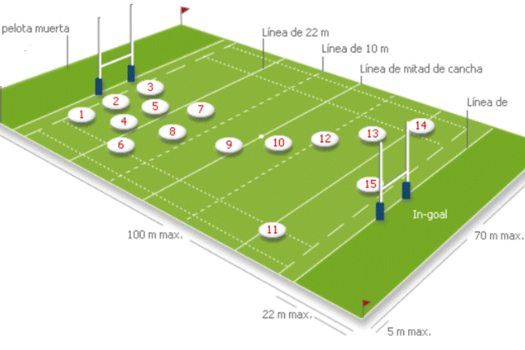

En el rugby se enfrentan dos equipos de quince jugadores cada equipo (aunque hay una variación para un juego de siete). El campo de juego tiene forma rectangular y es de césped (aunque puede ser de arena, tierra, nieve o césped artificial). Sus medidas son de un máximo de 95 metros de largo y 65 de ancho. Al campo de juego se le suman dos áreas, la zona de anotación (o in-goal), en cada uno de los extremos, de no más de 22 metros cada una, destinada a apoyar la pelota para obtener el try o ensayo, principal anotación del juego. Diseño reglamentario de la pelota de rugby.
En los dos extremos del campo, en el centro de la línea de anotación, se encuentran instalados dos postes separados entre sí por 5,6 metros y unidos por un travesaño situado a 3 metros de altura. Los postes deben tener un mínimo de 3,4 metros de alto, lo que le da al conjunto de los tres palos una forma de H. El balón de rugby es de forma ovalada, está construida con cuatro gajos de cuero o material sintético parecido y pesa algo menos de medio kilo.
Los partidos, en la modalidad de quince jugadores, duran ochenta minutos, divididos en dos tiempos iguales (setenta minutos para las categorías juveniles menores de 19 años).
Terreno de juego
Un campo de juego es rectangular, y no debe exceder de 95 metros de largo por 65 metros de ancho.13 Las líneas laterales (denominadas "líneas de touch") del campo de juego no forman parte de este. A continuación de cada uno de los lados menores del rectángulo hay una zona de anotación (o de ensayo), denominada "in-goal", con una longitud de entre 10 y 22 m. Entre el campo de juego y estas zonas de anotación hay una línea continua, denominada "línea de goal" (de marca, o de anotación, o de gol), que es parte de las últimas y en cuyo centro se ubican los postes de gol. Estos postes verticales están separados entre sí por una distancia de 5,6 m y unidos a 3 m de altura por un travesaño. La altura de los postes depende del gusto del equipo local, aunque en cualquier caso debe sobrepasar los 3,4 metros. El conjunto del campo de juego y las áreas de gol se denomina "área de juego". El área de juego, las líneas no incluidas en ella (las líneas de touch y las líneas laterales y finales que limitan el in-goal, denominadas líneas de touch in-goal y líneas de pelota muerta respectivamente), y un área perimetral de 5 m de ancho alrededor del conjunto anterior, se denomina "terreno de juego".
Posiciones
Posición de los jugadores de un equipo. En el rugby, los jugadores de cada equipo se dividen en dos grandes grupos: los forwards o delanteros y los backs, zagueros o defensores. Los forwards o delanteros, también referidos como "pack de forwards", son ocho jugadores, ubicados en la zona delantera del equipo. En general son los jugadores más grandes y pesados del equipo. Tienen como función específica disputar el scrum (melé) y los saques de lateral (line out). Los forwards se ubican en tres líneas: la primera línea está integrada por dos pilares (1 y 3) y un hooker o talonador (2) en el medio; la segunda línea está integrada por dos jugadores denominados con ese nombre (4 y 5); la tercera línea está integrada por tres jugadores, con el octavo en el medio, flanqueado por dos alas o flankers (6 y 7).